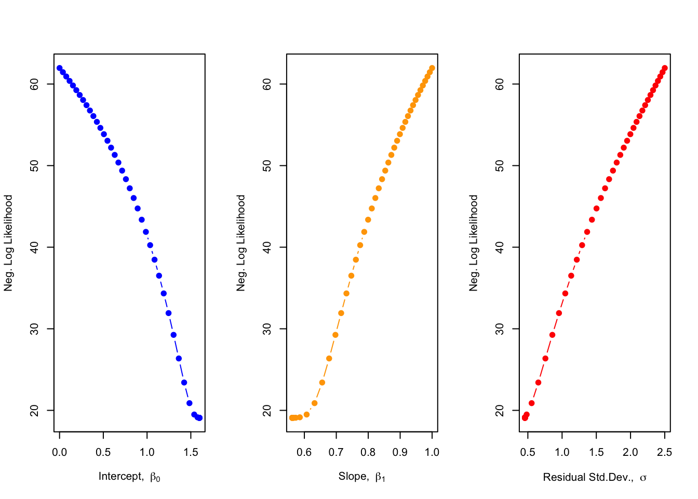

First, let’s generate some data for the case of a simple linear regression.
### PARAMSbeta0=1.5beta1=0.5sigma=0.4n=30### GENERATE DATAset.seed(5)x=runif(n, -1.5, 1.5)exp_y=beta0+beta1*xy=exp_y+rnorm(n, mean=0, sd=sigma)# Create a data frame my_df=data.frame(y =y, x =x)plot(my_df$y~my_df$x, pch =19, xlab ="x", ylab ="y")
6.2 Calculate a likelihood
Remember that, for simple linear regression, the likelihood of a single data point is as follows: \[y_i \sim N(\beta_0 + \beta_1 x_i, \sigma^2)\]\[P(y_i | X_i B, \sigma^2) = \frac{1}{\sqrt{2 \pi \sigma^2}} \text{e}^{-\frac{1}{2}\frac{(y_i - X_i B)^2}{\sigma^2}}\]
Then, the full likelihood of the data set \(Y\) is computed as:
\[ P(Y | X B, \sigma^2) = \prod^n_{i=1} P(y_i | X_i B, \sigma^2)\] Or, on the natural logarithmic scale: \[ ln\left(P(Y | X B, \sigma^2)\right) = \sum^n_{i=1} ln\left(P(y_i | X_i B, \sigma^2)\right)\]
# How to calculate the likelihood of a single data point:dnorm(y[1], mean =beta0+beta1*x[1], sd =sigma, log =FALSE)
[1] 0.987769
# Calculate the full likelihood of the data, using the product## Vectorized:LH_notlog=prod(dnorm(y, mean =beta0+beta1*x, sd =sigma, log =FALSE))# Log-likelihood, vectorizedLH_log=sum(dnorm(y, mean =beta0+beta1*x, sd =sigma, log =TRUE))# Make sure the output makes senseLH_notlog
[1] 8.496937e-10
# Indeed the log-likelihood is the log of the # likelihood on the raw probability scale.LH_log; log(LH_notlog)
[1] -20.88615
[1] -20.88615
6.3 Using optim() to minimize the negative log-likelihood
As we discussed in lecture, it is more computationally convenient to minimize functions, rather than to maximize. Therefore, to conduct linear regression analysis with maximum likelihood methods, we will find the values of \(\hat{B}\) that minimize the negative log-likelihood of the data: \(-ln\left(P(Y | X B, \sigma^2)\right)\).
6.3.1 Function to calculate the negative log-likelihood
First, we need to construct a function that calculates the negative log-likelihood and that specifies the parameters of the model that eventually need to be estimated by the optim() function.
Here you can see the inputs to the function: p is a vector of parameters to be estimated (i.e., optimized), and data_df is a data.frame that holds the values of outcome variable \(y\) and associated input variables, in this case, just one \(x\).
Then, we can use the optim() function, which implements a gradient descent algorithm to estimate the values of the parameters that minimize the provided function, neg_log_lik(). We will learn more about gradient descent later, because this is a very important method used widely across machine learning and neural networks.
Note the optim() options. par specifies the initial guesses of the three parameters, whereas lower and upper specify the bounds across which to search for the best values of the parameters. With hessian = TRUE we are asking the function to output an estimate of the Hessian matrix of the function, which helps us to estimate the standard errors of the parameter estimates (see Footnotes 6.6.1). The method specifies the algorithm used to minimize the function, which in this case is a modified quasi-Newton method, L-BFGS-B, which is a type of gradient descent algorithm, to be discussed later.
We can see that the function outputs three point-estimates, which are \(\hat{B}\) (i.e., slope and intercept), as well as the residual standard deviation, \(\hat{\sigma}\).
6.3.2 Compare optim() results to the OLS output
### COMPARE TO LM()m_ols=lm(y~1+x, data =my_df)m_ols_summary=summary(m_ols)m_ols_summary# Notice p-value
Call:
lm(formula = y ~ 1 + x, data = my_df)
Residuals:
Min 1Q Median 3Q Max
-1.04966 -0.37035 0.06069 0.37520 0.72646
Coefficients:
Estimate Std. Error t value Pr(>|t|)
(Intercept) 1.59847 0.08643 18.495 < 2e-16 ***
x 0.56205 0.09864 5.698 4.14e-06 ***
---
Signif. codes: 0 '***' 0.001 '**' 0.01 '*' 0.05 '.' 0.1 ' ' 1
Residual standard error: 0.4732 on 28 degrees of freedom
Multiple R-squared: 0.537, Adjusted R-squared: 0.5204
F-statistic: 32.47 on 1 and 28 DF, p-value: 4.136e-06
plot(my_df$y~my_df$x, pch =19, xlab ="x", ylab ="y")# Line from OLSabline(coef =coef(m_ols), col ="black", lwd =2)# Line from MaxLikelihoodabline(coef =m_nll$par[1:2], col ="red", lty =2, lwd =2)
As we learned in lecture, the estimates of \(\hat{B}\) from least squares and maximum likelihood are equivalent. And indeed, we see the same estimates produced from lm() and optim(). Also if you look at Residual standard error in the lm() output, you see the equivalent estimate for \(\hat{\sigma}\) compared to the optim() output.
6.4 Hypothesis-testing for maximum likelihood
As explained in lecture, we will use the likelihood ratio test to test:
\[H_0: \beta_i = 0\]\[H_A: \beta_i \ne 0\] In the least squares framework, we used a \(t\)-test. But, for maximum likelihood, we are going to base our test on the likelihood of a model that does or does not include the slope, similar to the \(F\)-test we learned before.
For the case of simple linear regression, we’re testing whether there is a significant difference between these models: \[H_0: y_i = \beta_0 + \epsilon_i\]\[H_A: y_i = \beta_0 + \beta_1 x_i + \epsilon_i\] Notice that in \(H_0\), the slope \(\beta_1\) is assumed to be zero.
6.4.1 Likelihood ratio and the \(\chi^2\) test
Our goal is to understand if the likelihood of the null model, \(P(Y | \beta_0, \sigma^2)\), is sufficiently low compared to the likelihood of the full model, \(P(Y | \beta_0, \beta_1, x, \sigma^2)\), that we can reliably reject the null hypothesis.
We therefore construct a ratio of the likelihoods of the full and null model, very similar to the \(F\)-test framework. The log-likelihood ratio (\(LHR\)) becomes our test statistic: \[LHR_{\text{test}} = -2 ln \left(\frac{LH_{\text{null}}}{LH_{\text{full}}} \right)\]
Then, folks smarter than I have done the math to prove that this test statistic is equivalent to a \(\chi^2\) test statistic, such that:
\[LHR_{\text{test}} \sim \chi^2_k\]
where \(\chi^2_k\) is a \(\chi^2\) probability distribution with \(k\) degrees of freedom. \(k\) is equal to \(p_{\text{full}} - p_{\text{null}}\), where \(p\) is the number of model coefficients. In the case of simple linear regression, where we are removing just one model coefficient from the full model (i.e., set slope equal to zero), then \(k = 2-1 = 1\).
Finally, we can determine \(P(\chi^2 > LHR_{\text{test}})\), which gives us our \(p\)-value. This statistical test is known as the “likelihood ratio test,” and it is equivalently referred to as the “\(\chi^2\)” test, which we’ll see in the code below.
6.4.2 Manual calculation of the likelihood ratio test
To begin, we need to use maximum likelihood to estimate the likelihood of the “null” model. We need to adjust our function that will be used by optim() to only include two parameters: the intercept, and the residual standard deviation.
# Need a null model:nll_null=function(p, data_df){beta0=p[1]sigma=p[2]mu=beta0nll=-sum(dnorm(data_df$y, mean=mu, sd=sigma, log =TRUE))return(nll)}m_nll_null=optim( par =c(0.1,0.1), fn =nll_null, data_df =my_df, method ="L-BFGS-B", lower=c(-5,0.001), upper=c(5,5))par_tab_nll_null=rbind(m_nll_null$par)colnames(par_tab_nll_null)=c("int", "sigma")par_tab_nll_null
int sigma
[1,] 1.612056 0.6718164
plot(my_df$y~my_df$x, pch =19, xlab ="x", ylab ="y")abline(coef =m_nll$par[1:2], col ="red", lty =1)abline(h =m_nll_null$par[1], col ="red", lty =2)
The flat dashed line represents the null (intercept-only) model. Now, we calculate the likelihood ratio test statistic, and compare to the \(\chi^2\) probability distribution to determine our \(p\)-value of the test. Note that within the optim() function’s output list, there is a numeric object called value. This value is the negative log-likelihood of the model with the estimated coefficients. We can use this to calculate our test statistic.
# use exp() to convert the negative log likelihood to # raw probability scalelog_lh_full=-m_nll$valuelog_lh_null=-m_nll_null$valuelh_full=exp(log_lh_full)lh_null=exp(log_lh_null)# Now calculate LHRlhr=-2*log(lh_null/lh_full)lhr
[1] 23.09763
# Of course, using rules of natural logs, this is equivalent:-2*(log_lh_null-log_lh_full)
[1] 23.09763
Now that we have our value of \(LHR_{\text{test}}\), we use the \(\chi^2\)-distribution to find \(P(\chi^2 > LHR_{\text{test}})\), which is the \(p\)-value of the test.
# How many parameters being "removed" (i.e., set to zero) in test:df_chi=2-1# Prob null is truep_val=1-pchisq(lhr, df =df_chi)p_val
[1] 1.539803e-06
Based on this low \(p\)-value, we would say there is sufficient evidence to reject the null hypothesis and that the slope \(\beta_1\) is significantly different than zero.
We can compare this outcome to a built-in R function called drop1().
Single term deletions
Model:
y ~ 1 + x
Df Sum of Sq RSS AIC Pr(>Chi)
<none> 6.2697 -42.964
x 1 7.2703 13.5401 -21.866 1.54e-06 ***
---
Signif. codes: 0 '***' 0.001 '**' 0.01 '*' 0.05 '.' 0.1 ' ' 1
In the function, we specified Chisq test, which implements the \(\chi^2\) test using the likelihood ratio. What we see in this summary output is Pr(>Chi) which is equivalent to our manually computed value of \(P(\chi^2 > LHR_{\text{test}})\). This output from drop1() does not provide a whole lot of detail, but if you look at the help(), it says that if you specify test = "Chisq", it conducts a likelihood-ratio test. It doesn’t specifically output the likelihood ratio, but we can see the \(p\)-value is equivalent to our manual calculation above.
6.5 Gradient descent algorithm
How does the optim() function work? There are various optimization algorithms that can be implemented by optim() that are specified by the user in the method option. Several of these are gradient-based algorithms, which is a family of algorithms that are very common in engineering problems (e.g., optimal control of drones) and machine learning (e.g., neural networks, reinforcement learning). These algorithms generally minimize an “objective function”: \(\min_{{x\in {\mathbb R}^{n}}}\;f(x)\).
A gradient descent algorithm is the most common algorithm for minimizing a function. There are many varieties of these algorithms that employ various “tricks” to make the algorithms more efficient (e.g., find the solution in a smaller number of iterations) or more reliable. In lecture we outlined the foundational gradient descent algorithm, upon which many more advanced algorithms are based. For a function \(f(x)\), find the value of \(x\) that solves the problem: \(\min _{{x\in {\mathbb R}^{n}}}\;f(x)\)
Choose a starting value of \(x\)
Evaluate \(\nabla f(x)\). With \(h=10^{-4}\): \[\text{grad} = \frac{f(x+h) - f(x)}{h}\]
Set the search direction as \(\text{direct} = -\nabla f(x)\)
Set the step size as a fraction of \(\nabla f(x)\): \(\text{alpha} = 0.005\)
Update \(x\) for next iteration: \[x = x + \text{alpha}* \text{direct}\]
Let’s implement this algorithm for the maximum likelihood solution of simple linear regression, using the data set above. To make this easier, we’re going to assume that we know the intercept and the residual standard deviation perfectly, so we are only trying to estimate the slope. See Footnotes 6.6.3 for the case in which we estimate all three model parameters simultaneously using gradient descent.
# Set up some storage arrays:slope_guess=NULLnll_guess=NULL# initial guessslope=0.1# set h for approx of gradienth=1e-4# set step sizealpha=0.005# Set gradient to arbitrary high number## This makes the while() loop workgrad=100# initialize counteri=1# While gradient is not yet \approx zerowhile(norm(grad, "2")>10^-4){# Store the current value of slope:slope_guess[i]=slope############## Approximate the gradient of the nll############### Adjust the slope by a small number, hslope_adj=slope+h## Calculate f(slope)f_slope=neg_log_lik(p =c(beta0, slope, sigma), data_df =my_df)## Store the current nllnll_guess[i]=f_slope## Calculate f(slope + h)f_slope_adj=neg_log_lik(p =c(beta0, slope_adj, sigma), data_df =my_df)## Calculate gradientgrad=(f_slope_adj-f_slope)/h# search directiondirect=-grad# update slopeslope=slope+alpha*direct# counter for xi=i+1}# Output the optimal slope and associated nlln_iter=i-1grad_descent_tab=cbind(slope_guess[n_iter], nll_guess[n_iter])colnames(grad_descent_tab)=c("slope", "neg_log_lik")# Compare to optim() outpuoptim_nll_tab=cbind(m_nll$par[2], m_nll$value)colnames(optim_nll_tab)=c("slope", "neg_log_lik")print("Gradient Descent:");grad_descent_tab
Note that the estimates are not exactly the same, especially because when we used optim() we were estimating all three parameters simultaneously: intercept, slope, residual standard error.
The optim() function provides point estimates for the maximum likelihood-derived model coefficients. Just like in least squares regression, however, we want to quantify the uncertainty in these estimates. We therefore want the standard error in the model coefficient estimates.
In the case of least squares, we showed how we can calculate a variance-covariance matrix for the model coefficients, and then the square-root of the diagonal of this matrix equals the standard error. For maximum likelihood we can estimate this same variance-covariance matrix, but it comes from a different matrix called the Hessian. We do not need to go into detail, but the Hessian is the matrix of second derivatives of the likelihood with respect to the parameters (I will not ask you to recall this information). Then the variance-covariance matrix of the estimated model coefficients is calculated as the inverse of the Hessian matrix that corresponds to the negative log-likelihood. If the Hessian matrix of the negative log-likelihood is \(H\), then \[SE(\hat{\beta_i}) = \sqrt{\text{diag}\left( H^{-1}\right)_i}\] I understand that’s complicated, but it’s easy enough to extract these values computationally from optim() output, assuming you use the option hessian = TRUE.
# Extract the Hessian from the optim() outputhessian=m_nll$hessian# Calculate the var-cov matrix from the inverse Hessian# Remember solve(X) gives X^-1params_varcov=solve(hessian)# Then extract the diagonal and take the square root# This gives a vector of SE(\param_i)se_params=sqrt(diag(params_varcov))params_tab=cbind(m_nll$par, se_params)colnames(params_tab)=c("Estimate", "Std. Error")rownames(params_tab)=c("Intercept", "slope", "sigma")params_tab
# Same as OLS? m_ols_summary$coefficients[c(1:2), 1:2]# Pretty close!
Estimate Std. Error
(Intercept) 1.5984685 0.08642710
x 0.5620501 0.09863766
We can see that the standard errors for the maximum likelihood estimators are the same as the OLS estimators.
6.6.2optim() using least squares
Remember that optim() is not specific to maximum likelihood, but rather it implements one of several optional minimization algorithms. Therefore, we can use it to minimize any quantity. To emphasize this point, remember that in least squares regression, we are finding the values of the model coefficients \(\hat{B}\) that minimize the sum of squared errors, \(\sum_i^n \epsilon_i^2 = \epsilon^T\epsilon\). Let’s minimize this quantity using optim().
### LEAST SQUARES MINIMIZATION# We need a function to calculate the sum of squared errors:least_sq=function(p, data_df){beta0=p[1]beta1=p[2]y=data_df$yn=length(y)expected_y=beta0+beta1*data_df$xsse=0for(iin1:n){epsilon_i=y[i]-expected_y[i]sse=sse+(epsilon_i)^2}return(sse)}### OPTIMIZE LEAST SQUARESfit_least_sq=optim( par =c(0,0), fn =least_sq, data_df =my_df, method ="L-BFGS-B", lower=c(-5,-5), upper=c(5,5), hessian =TRUE)# Create a table of estimates:par_tab_least_sq=rbind(fit_least_sq$par)colnames(par_tab_least_sq)=c("int", "slope")par_tab_least_sq
You could also use the Hessian output to calculate the standard errors of the model coefficients, but I will leave that up to you.
6.6.3 Gradient descent, multiple parameters
Now let’s suppose we want to estimate all of our model parameters (intercept, slope, residual standard deviation) simultaneously using gradient descent. Recall from lecture that we need to estimate three components of the gradient (the partial derivates of the function with respect to each model parameter).
# How many params to estimate?n_param=3# Set up some storage arrays:## Guess that the number of iterations will be 100 or less...param_guess=array(0, dim=c(100,n_param))nll_guess=vector("numeric", length =100)# initial guessesparam=vector("numeric", length =n_param)param[1]=0.0# interceptparam[2]=1.0param[3]=2.5# set h for approx of gradienth=1e-4# set step sizealpha=0.005# Set gradient components to arbitrary high numbers## This makes the while() loop workgrad=rep(100, times =n_param)# initialize counteri=1# While gradient is not yet \approx zerowhile(norm(grad, "2")>10^-4){# Store the current value of slope:param_guess[i, ]=param############## Approximate the gradient of the nll############### Calculate nll with all current paramsf_x=neg_log_lik(p =param, data_df =my_df)## Store the current nllnll_guess[i]=f_x## One param at a time, approximate gradient component## (i.e., partial derivative)for(jin1:n_param){## Keep all but one params the sameparam_adj=NULLparam_adj=paramparam_adj[j]=param[j]+hf_x_adj=neg_log_lik(p =param_adj, data_df =my_df)## Calculate gradient componentgrad[j]=(f_x_adj-f_x)/h}# search direction## Note that 'direct' is an array of size n_paramdirect=-grad# update paramsfor(jin1:n_param){param[j]=param[j]+alpha*direct[j]}# counter for xi=i+1}# Output the optimal slope and associated nlln_iter=i-1grad_descent_tab=cbind(rbind(param_guess[n_iter,]), nll_guess[n_iter])colnames(grad_descent_tab)=c("int", "slope", "sigma", "neg_log_lik")# Compare to optim() outputoptim_nll_tab=cbind(rbind(m_nll$par), m_nll$value)colnames(optim_nll_tab)=colnames(grad_descent_tab)print("Gradient Descent:");grad_descent_tab
[1] "Gradient Descent:"
int slope sigma neg_log_lik
[1,] 1.59842 0.5620025 0.4571052 19.08618
int slope sigma neg_log_lik
[1,] 1.598468 0.56205 0.4571571 19.08618
Now, plot the gradient descent:
par(mfrow=c(1,3))plot(nll_guess[1:n_iter]~param_guess[1:n_iter, 1], pch=19, type ="b", col ="blue", ylab ="Neg. Log Likelihood", xlab =expression("Intercept, "~beta[0]))plot(nll_guess[1:n_iter]~param_guess[1:n_iter, 2], pch=19, type ="b", col ="orange", ylab ="Neg. Log Likelihood", xlab =expression("Slope, "~beta[1]))plot(nll_guess[1:n_iter]~param_guess[1:n_iter, 3], pch=19, type ="b", col ="red", ylab ="Neg. Log Likelihood", xlab =expression("Residual Std.Dev., "~sigma))

We can see for the intercept, our first guess was too low, so we descended the gradient by addition (i.e., search direction was positive), whereas for the slope and the residual standard deviation, our first guess was too large, so we descended the gradients by subtraction (i.e., search direction was negative).
Source Code
# Maximum Likelihood {#sec-max-lik}## Generate some data {#sec-data}First, let's generate some data for the case of a simple linear regression.```{r}### PARAMSbeta0 =1.5beta1 =0.5sigma =0.4n =30### GENERATE DATAset.seed(5)x =runif(n, -1.5, 1.5)exp_y = beta0 + beta1*xy = exp_y +rnorm(n, mean=0, sd=sigma)# Create a data frame my_df =data.frame(y = y, x = x)plot(my_df$y ~ my_df$x, pch =19,xlab ="x", ylab ="y")```## Calculate a likelihoodRemember that, for simple linear regression, the likelihood of a single data point is as follows:$$y_i \sim N(\beta_0 + \beta_1 x_i, \sigma^2)$$$$P(y_i | X_i B, \sigma^2) = \frac{1}{\sqrt{2 \pi \sigma^2}} \text{e}^{-\frac{1}{2}\frac{(y_i - X_i B)^2}{\sigma^2}}$$Then, the full likelihood of the data set $Y$ is computed as:$$ P(Y | X B, \sigma^2) = \prod^n_{i=1} P(y_i | X_i B, \sigma^2)$$Or, on the natural logarithmic scale:$$ ln\left(P(Y | X B, \sigma^2)\right) = \sum^n_{i=1} ln\left(P(y_i | X_i B, \sigma^2)\right)$$```{r}# How to calculate the likelihood of a single data point:dnorm(y[1], mean = beta0 + beta1*x[1],sd = sigma,log =FALSE)# Calculate the full likelihood of the data, using the product## Vectorized:LH_notlog=prod(dnorm(y, mean = beta0 + beta1*x,sd = sigma,log =FALSE))# Log-likelihood, vectorizedLH_log =sum(dnorm(y, mean = beta0 + beta1*x,sd = sigma,log =TRUE))# Make sure the output makes senseLH_notlog# Indeed the log-likelihood is the log of the # likelihood on the raw probability scale.LH_log; log(LH_notlog)```## Using `optim()` to minimize the negative log-likelihoodAs we discussed in lecture, it is more computationally convenient to minimize functions, rather than to maximize. Therefore, to conduct linear regression analysis with maximum likelihood methods, we will find the values of $\hat{B}$ that minimize the negative log-likelihood of the data: $-ln\left(P(Y | X B, \sigma^2)\right)$.### Function to calculate the negative log-likelihoodFirst, we need to construct a function that calculates the negative log-likelihood and that specifies the parameters of the model that eventually need to be estimated by the `optim()` function.```{r}### NEG LOG-LIK MINIMIZATIONneg_log_lik =function(p, data_df){ beta0=p[1] beta1=p[2] sigma=p[3] mu = beta0 + beta1*data_df$x nll =-sum(dnorm(data_df$y, mean=mu, sd=sigma, log =TRUE))return(nll)}```Here you can see the inputs to the function: `p` is a vector of parameters to be estimated (i.e., optimized), and `data_df` is a `data.frame` that holds the values of outcome variable $y$ and associated input variables, in this case, just one $x$. Then, we can use the `optim()` function, which implements a gradient descent algorithm to estimate the values of the parameters that minimize the provided function, `neg_log_lik()`. We will learn more about gradient descent later, because this is a very important method used widely across machine learning and neural networks. ```{r}m_nll =optim(par =c(0.1,0,0.1),fn = neg_log_lik,data_df = my_df,method ="L-BFGS-B",lower=c(-5,-5,0.001),upper=c(5,5,5),hessian =TRUE )par_tab_nll =rbind(m_nll$par)colnames(par_tab_nll) =c("int", "slope", "sigma")par_tab_nll```Note the `optim()` options. `par` specifies the initial guesses of the three parameters, whereas `lower` and `upper` specify the bounds across which to search for the best values of the parameters. With `hessian = TRUE` we are asking the function to output an estimate of the Hessian matrix of the function, which helps us to estimate the standard errors of the parameter estimates (see [Footnotes @sec-hessian]). The `method` specifies the algorithm used to minimize the function, which in this case is a modified quasi-Newton method, `L-BFGS-B`, which is a type of gradient descent algorithm, to be discussed later. We can see that the function outputs three point-estimates, which are $\hat{B}$ (i.e., slope and intercept), as well as the residual standard deviation, $\hat{\sigma}$.### Compare `optim()` results to the OLS output```{r}### COMPARE TO LM()m_ols =lm(y ~1+ x, data = my_df)m_ols_summary =summary(m_ols)m_ols_summary # Notice p-valuepar_tab_ols =c(coef(m_ols), m_ols_summary$sigma)names(par_tab_ols) =c("int", "slope", "sigma")par_tab_ols; par_tab_nllplot(my_df$y ~ my_df$x, pch =19,xlab ="x", ylab ="y")# Line from OLSabline(coef =coef(m_ols), col ="black", lwd =2)# Line from MaxLikelihoodabline(coef = m_nll$par[1:2], col ="red", lty =2, lwd =2)```As we learned in lecture, the estimates of $\hat{B}$ from least squares and maximum likelihood are equivalent. And indeed, we see the same estimates produced from `lm()` and `optim()`. Also if you look at `Residual standard error` in the `lm()` output, you see the equivalent estimate for $\hat{\sigma}$ compared to the `optim()` output. ## Hypothesis-testing for maximum likelihoodAs explained in lecture, we will use the likelihood ratio test to test:$$H_0: \beta_i = 0$$$$H_A: \beta_i \ne 0$$In the least squares framework, we used a $t$-test. But, for maximum likelihood, we are going to base our test on the *likelihood* of a model that does or does not include the slope, similar to the $F$-test we learned before. For the case of simple linear regression, we're testing whether there is a significant difference between these models:$$H_0: y_i = \beta_0 + \epsilon_i$$$$H_A: y_i = \beta_0 + \beta_1 x_i + \epsilon_i$$Notice that in $H_0$, the slope $\beta_1$ is assumed to be zero. ### Likelihood ratio and the $\chi^2$ testOur goal is to understand if the likelihood of the null model, $P(Y | \beta_0, \sigma^2)$, is sufficiently low compared to the likelihood of the full model, $P(Y | \beta_0, \beta_1, x, \sigma^2)$, that we can reliably reject the null hypothesis.We therefore construct a ratio of the likelihoods of the full and null model, very similar to the $F$-test framework. The log-likelihood ratio ($LHR$) becomes our test statistic:$$LHR_{\text{test}} = -2 ln \left(\frac{LH_{\text{null}}}{LH_{\text{full}}} \right)$$Then, folks smarter than I have done the math to prove that this test statistic is equivalent to a $\chi^2$ test statistic, such that:$$LHR_{\text{test}} \sim \chi^2_k$$where $\chi^2_k$ is a $\chi^2$ probability distribution with $k$ degrees of freedom. $k$ is equal to $p_{\text{full}} - p_{\text{null}}$, where $p$ is the number of model coefficients. In the case of simple linear regression, where we are removing just one model coefficient from the full model (i.e., set slope equal to zero), then $k = 2-1 = 1$.Finally, we can determine $P(\chi^2 > LHR_{\text{test}})$, which gives us our $p$-value. This statistical test is known as the "likelihood ratio test," and it is equivalently referred to as the "$\chi^2$" test, which we'll see in the code below. ### Manual calculation of the likelihood ratio testTo begin, we need to use maximum likelihood to estimate the likelihood of the "null" model. We need to adjust our function that will be used by `optim()` to only include two parameters: the intercept, and the residual standard deviation. ```{r}# Need a null model:nll_null =function(p, data_df){ beta0=p[1] sigma=p[2] mu = beta0 nll =-sum(dnorm(data_df$y, mean=mu, sd=sigma, log =TRUE))return(nll)}m_nll_null =optim(par =c(0.1,0.1),fn = nll_null,data_df = my_df,method ="L-BFGS-B",lower=c(-5,0.001),upper=c(5,5) )par_tab_nll_null =rbind(m_nll_null$par)colnames(par_tab_nll_null) =c("int", "sigma")par_tab_nll_nullplot(my_df$y ~ my_df$x, pch =19,xlab ="x", ylab ="y")abline(coef = m_nll$par[1:2], col ="red", lty =1)abline(h = m_nll_null$par[1], col ="red", lty =2)```The flat dashed line represents the null (intercept-only) model. Now, we calculate the likelihood ratio test statistic, and compare to the $\chi^2$ probability distribution to determine our $p$-value of the test. Note that within the `optim()` function's output list, there is a numeric object called `value`. This `value` is the negative log-likelihood of the model with the estimated coefficients. We can use this to calculate our test statistic.```{r}# use exp() to convert the negative log likelihood to # raw probability scalelog_lh_full =-m_nll$valuelog_lh_null =-m_nll_null$valuelh_full =exp(log_lh_full)lh_null =exp(log_lh_null)# Now calculate LHRlhr =-2*log(lh_null / lh_full)lhr# Of course, using rules of natural logs, this is equivalent:-2* (log_lh_null - log_lh_full)```Now that we have our value of $LHR_{\text{test}}$, we use the $\chi^2$-distribution to find $P(\chi^2 > LHR_{\text{test}})$, which is the $p$-value of the test.```{r}# How many parameters being "removed" (i.e., set to zero) in test:df_chi =2-1# Prob null is truep_val =1-pchisq(lhr, df = df_chi)p_val```Based on this low $p$-value, we would say there is sufficient evidence to reject the null hypothesis and that the slope $\beta_1$ is significantly different than zero. We can compare this outcome to a built-in `R` function called `drop1()`. ```{r}drop1(m_ols, test ="Chisq")```In the function, we specified `Chisq` test, which implements the $\chi^2$ test using the likelihood ratio. What we see in this summary output is `Pr(>Chi)` which is equivalent to our manually computed value of $P(\chi^2 > LHR_{\text{test}})$. This output from `drop1()` does not provide a whole lot of detail, but if you look at the `help()`, it says that if you specify `test = "Chisq"`, it conducts a likelihood-ratio test. It doesn't specifically output the likelihood ratio, but we can see the $p$-value is equivalent to our manual calculation above. ## Gradient descent algorithmHow does the `optim()` function work? There are various optimization algorithms that can be implemented by `optim()` that are specified by the user in the `method` option. Several of these are gradient-based algorithms, which is a family of algorithms that are very common in engineering problems (e.g., optimal control of drones) and machine learning (e.g., neural networks, reinforcement learning). These algorithms generally minimize an "objective function": $\min_{{x\in {\mathbb R}^{n}}}\;f(x)$. A gradient descent algorithm is the most common algorithm for minimizing a function. There are many varieties of these algorithms that employ various "tricks" to make the algorithms more efficient (e.g., find the solution in a smaller number of iterations) or more reliable. In lecture we outlined the foundational gradient descent algorithm, upon which many more advanced algorithms are based. For a function $f(x)$, find the value of $x$ that solves the problem: $\min _{{x\in {\mathbb R}^{n}}}\;f(x)$1. Choose a starting value of $x$2. Evaluate $\nabla f(x)$. With $h=10^{-4}$:$$\text{grad} = \frac{f(x+h) - f(x)}{h}$$3. Set the search direction as $\text{direct} = -\nabla f(x)$4. Set the step size as a fraction of $\nabla f(x)$: $\text{alpha} = 0.005$5. Update $x$ for next iteration: $$x = x + \text{alpha}* \text{direct}$$6. Repeat Steps 2-5 until $\nabla f(x) \approx 0$ (i.e., $||\text{grad}|| \le 10^{-4}$)Let's implement this algorithm for the maximum likelihood solution of simple linear regression, using the data set above. To make this easier, we're going to assume that we know the intercept and the residual standard deviation perfectly, so we are only trying to estimate the slope. See [Footnotes @sec-grad-multi] for the case in which we estimate all three model parameters simultaneously using gradient descent. ```{r}# Set up some storage arrays:slope_guess =NULLnll_guess =NULL# initial guessslope =0.1# set h for approx of gradienth =1e-4# set step sizealpha =0.005# Set gradient to arbitrary high number## This makes the while() loop workgrad =100# initialize counteri =1# While gradient is not yet \approx zerowhile (norm(grad, "2") >10^-4) {# Store the current value of slope: slope_guess[i] = slope############## Approximate the gradient of the nll############### Adjust the slope by a small number, h slope_adj = slope + h## Calculate f(slope) f_slope =neg_log_lik(p =c(beta0, slope, sigma), data_df = my_df)## Store the current nll nll_guess[i] = f_slope## Calculate f(slope + h) f_slope_adj =neg_log_lik(p =c(beta0, slope_adj, sigma), data_df = my_df)## Calculate gradient grad = (f_slope_adj - f_slope) / h# search direction direct =-grad# update slope slope = slope + alpha * direct# counter for x i = i +1}# Output the optimal slope and associated nlln_iter = i-1grad_descent_tab =cbind(slope_guess[n_iter], nll_guess[n_iter])colnames(grad_descent_tab) =c("slope", "neg_log_lik")# Compare to optim() outpuoptim_nll_tab =cbind(m_nll$par[2], m_nll$value)colnames(optim_nll_tab) =c("slope", "neg_log_lik")print("Gradient Descent:");grad_descent_tabprint("optim() output:");optim_nll_tab```Note that the estimates are not exactly the same, especially because when we used `optim()` we were estimating all three parameters simultaneously: intercept, slope, residual standard error.Now, let's visualize the gradient descent.```{r}plot(nll_guess ~ slope_guess, pch =19, type ="b", ylab ="Neg. Log. Likelihood",xlab =expression(hat(beta)[1]),xlim =c(0.1, 0.6), ylim =c(15, 40))```## Footnotes ### Hessian matrix {#sec-hessian}The `optim()` function provides point estimates for the maximum likelihood-derived model coefficients. Just like in least squares regression, however, we want to quantify the uncertainty in these estimates. We therefore want the standard error in the model coefficient estimates. In the case of least squares, we showed how we can calculate a variance-covariance matrix for the model coefficients, and then the square-root of the diagonal of this matrix equals the standard error. For maximum likelihood we can estimate this same variance-covariance matrix, but it comes from a different matrix called the Hessian. We do not need to go into detail, but the Hessian is the matrix of second derivatives of the likelihood with respect to the parameters (I will not ask you to recall this information). Then the variance-covariance matrix of the estimated model coefficients is calculated as the inverse of the Hessian matrix that corresponds to the negative log-likelihood. If the Hessian matrix of the negative log-likelihood is $H$, then$$SE(\hat{\beta_i}) = \sqrt{\text{diag}\left( H^{-1}\right)_i}$$I understand that's complicated, but it's easy enough to extract these values computationally from `optim()` output, assuming you use the option `hessian = TRUE`. ```{r}# Extract the Hessian from the optim() outputhessian = m_nll$hessian# Calculate the var-cov matrix from the inverse Hessian# Remember solve(X) gives X^-1params_varcov =solve(hessian)# Then extract the diagonal and take the square root# This gives a vector of SE(\param_i)se_params =sqrt(diag(params_varcov))params_tab =cbind(m_nll$par, se_params)colnames(params_tab) =c("Estimate", "Std. Error")rownames(params_tab) =c("Intercept", "slope", "sigma")params_tab# Same as OLS? m_ols_summary$coefficients[c(1:2), 1:2] # Pretty close!```We can see that the standard errors for the maximum likelihood estimators are the same as the OLS estimators. ### `optim()` using least squares {#sec-least-sq}Remember that `optim()` is not specific to maximum likelihood, but rather it implements one of several optional minimization algorithms. Therefore, we can use it to minimize any quantity. To emphasize this point, remember that in least squares regression, we are finding the values of the model coefficients $\hat{B}$ that minimize the sum of squared errors, $\sum_i^n \epsilon_i^2 = \epsilon^T\epsilon$. Let's minimize this quantity using `optim()`. ```{r}### LEAST SQUARES MINIMIZATION# We need a function to calculate the sum of squared errors:least_sq =function(p, data_df){ beta0=p[1] beta1=p[2] y = data_df$y n =length(y) expected_y = beta0 + beta1*data_df$x sse =0for(i in1:n){ epsilon_i = y[i] - expected_y[i] sse = sse + (epsilon_i)^2 }return(sse)}### OPTIMIZE LEAST SQUARESfit_least_sq =optim(par =c(0,0),fn = least_sq,data_df = my_df,method ="L-BFGS-B",lower=c(-5,-5),upper=c(5,5),hessian =TRUE )# Create a table of estimates:par_tab_least_sq =rbind(fit_least_sq$par)colnames(par_tab_least_sq) =c("int", "slope")par_tab_least_sq# Compare to original OLS estimates:coef(m_ols)```You could also use the Hessian output to calculate the standard errors of the model coefficients, but I will leave that up to you.### Gradient descent, multiple parameters {#sec-grad-multi}Now let's suppose we want to estimate all of our model parameters (intercept, slope, residual standard deviation) simultaneously using gradient descent. Recall from lecture that we need to estimate three components of the gradient (the partial derivates of the function with respect to each model parameter).```{r}# How many params to estimate?n_param =3# Set up some storage arrays:## Guess that the number of iterations will be 100 or less...param_guess =array(0, dim=c(100,n_param))nll_guess =vector("numeric", length =100)# initial guessesparam =vector("numeric", length = n_param)param[1] =0.0# interceptparam[2] =1.0param[3] =2.5# set h for approx of gradienth =1e-4# set step sizealpha =0.005# Set gradient components to arbitrary high numbers## This makes the while() loop workgrad =rep(100, times = n_param)# initialize counteri =1# While gradient is not yet \approx zerowhile (norm(grad, "2") >10^-4) {# Store the current value of slope: param_guess[i, ] = param############## Approximate the gradient of the nll############### Calculate nll with all current params f_x =neg_log_lik(p = param, data_df = my_df)## Store the current nll nll_guess[i] = f_x## One param at a time, approximate gradient component## (i.e., partial derivative)for(j in1:n_param){## Keep all but one params the same param_adj =NULL param_adj = param param_adj[j] = param[j] + h f_x_adj =neg_log_lik(p = param_adj, data_df = my_df)## Calculate gradient component grad[j] = (f_x_adj - f_x) / h }# search direction## Note that 'direct' is an array of size n_param direct =-grad# update paramsfor(j in1:n_param){ param[j] = param[j] + alpha * direct[j] }# counter for x i = i +1}# Output the optimal slope and associated nlln_iter = i-1grad_descent_tab =cbind(rbind(param_guess[n_iter,]), nll_guess[n_iter])colnames(grad_descent_tab) =c("int", "slope", "sigma", "neg_log_lik")# Compare to optim() outputoptim_nll_tab =cbind(rbind(m_nll$par), m_nll$value)colnames(optim_nll_tab) =colnames(grad_descent_tab)print("Gradient Descent:");grad_descent_tabprint("optim() output:");optim_nll_tab```Now, plot the gradient descent:```{r}par(mfrow=c(1,3))plot(nll_guess[1:n_iter]~param_guess[1:n_iter, 1], pch=19, type ="b", col ="blue",ylab ="Neg. Log Likelihood", xlab =expression("Intercept, "~beta[0]))plot(nll_guess[1:n_iter]~param_guess[1:n_iter, 2],pch=19, type ="b", col ="orange",ylab ="Neg. Log Likelihood", xlab =expression("Slope, "~beta[1]))plot(nll_guess[1:n_iter]~param_guess[1:n_iter, 3], pch=19, type ="b", col ="red",ylab ="Neg. Log Likelihood", xlab =expression("Residual Std.Dev., "~sigma))```We can see for the intercept, our first guess was too low, so we descended the gradient by addition (i.e., search direction was positive), whereas for the slope and the residual standard deviation, our first guess was too large, so we descended the gradients by subtraction (i.e., search direction was negative).